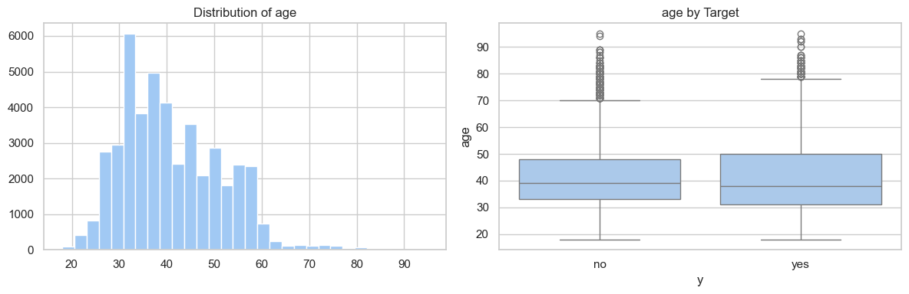
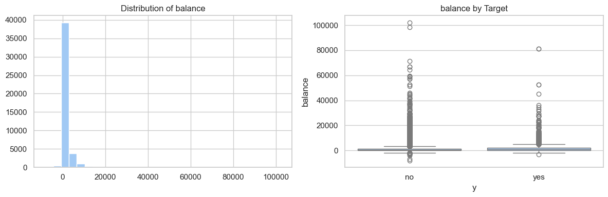
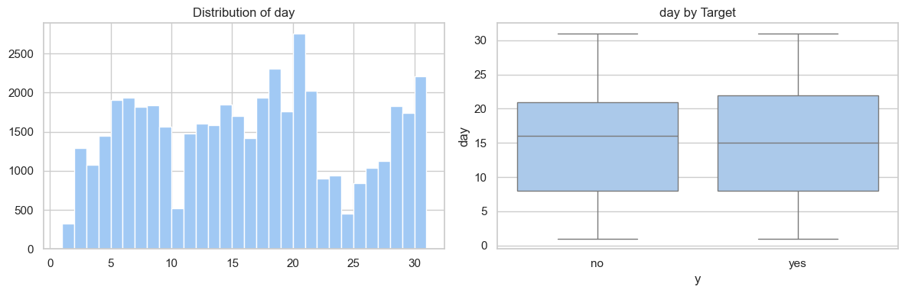
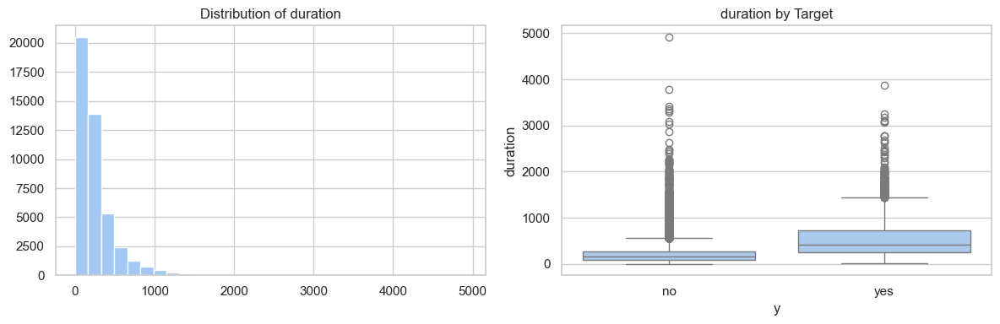
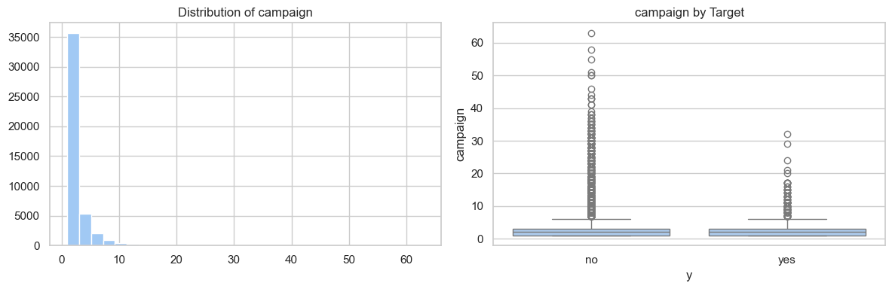
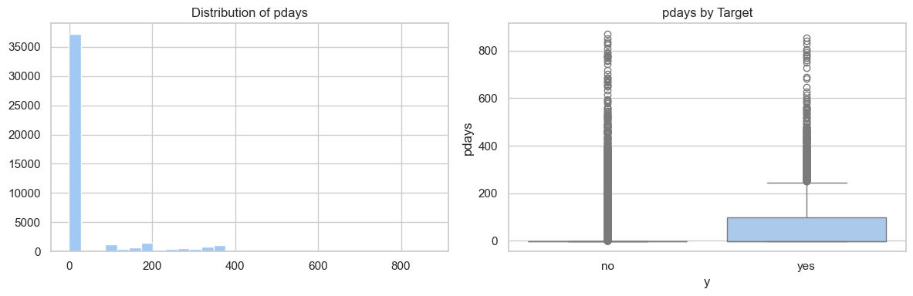
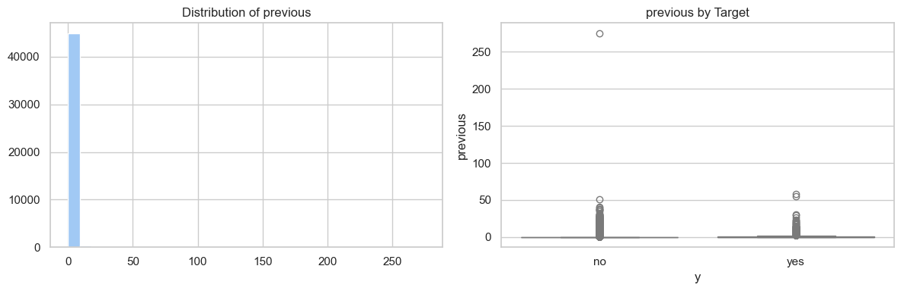

import pandas as pd
import numpy as np
import matplotlib.pyplot as plt
import seaborn as sns
# quarto preview 00_initial_eda.ipynb
# quarto render 00_inital_eda.ipynb
# black 00_inital_eda.ipynb
sns.set(style="whitegrid", palette="pastel")Data Overview & Loading
df = pd.read_csv(
"data/bank-full.csv", sep=";", quotechar='"', index_col=0
).reset_index()
print(df.shape)
df.head(2)(45211, 17)| age | job | marital | education | default | balance | housing | loan | contact | day | month | duration | campaign | pdays | previous | poutcome | y | |
|---|---|---|---|---|---|---|---|---|---|---|---|---|---|---|---|---|---|
| 0 | 58 | management | married | tertiary | no | 2143 | yes | no | unknown | 5 | may | 261 | 1 | -1 | 0 | unknown | no |
| 1 | 44 | technician | single | secondary | no | 29 | yes | no | unknown | 5 | may | 151 | 1 | -1 | 0 | unknown | no |
df.info()<class 'pandas.core.frame.DataFrame'>
RangeIndex: 45211 entries, 0 to 45210
Data columns (total 17 columns):
# Column Non-Null Count Dtype
--- ------ -------------- -----
0 age 45211 non-null int64
1 job 45211 non-null object
2 marital 45211 non-null object
3 education 45211 non-null object
4 default 45211 non-null object
5 balance 45211 non-null int64
6 housing 45211 non-null object
7 loan 45211 non-null object
8 contact 45211 non-null object
9 day 45211 non-null int64
10 month 45211 non-null object
11 duration 45211 non-null int64
12 campaign 45211 non-null int64
13 pdays 45211 non-null int64
14 previous 45211 non-null int64
15 poutcome 45211 non-null object
16 y 45211 non-null object
dtypes: int64(7), object(10)
memory usage: 5.9+ MB# 'unknown' values in object columns
print("\n'unknown' values:")
for col in df.select_dtypes(include="object").columns:
n_ = (df[col] == "unknown").sum()
if n_ != 0:
pct = (n_ / len(df)) * 100
print(f"{col}: {n_} ({pct:.2f}%)")
# -1 values (common placeholder)
print("\n'-1' values:")
for col in df.select_dtypes(include=["int64", "float64"]).columns:
n_ = (df[col] == -1).sum()
if n_ != 0:
pct = (n_ / len(df)) * 100
print(f"{col}: {n_} ({pct:.2f}%)")
'unknown' values:
job: 288 (0.64%)
education: 1857 (4.11%)
contact: 13020 (28.80%)
poutcome: 36959 (81.75%)
'-1' values:
balance: 50 (0.11%)
pdays: 36954 (81.74%)- Loaded a banking dataset with 45,211 records and 17 features.
- Features include customer demographics (
age,job,marital,education), financial information (balance,loan,housing), contact info (contact,day,month,duration), and campaign history (campaign,pdays,previous,poutcome). - No missing values were found, but several columns contain
'unknown'entries (notablycontact28.8%,poutcome81.8%). - Numeric columns use -1 as a placeholder in
balance(0.11%) andpdays(81.74%)
Target Variable (y) Distribution
# Check target distribution
print("Target distribution:")
print(df["y"].value_counts())
print("\nPercentages:")
print(df["y"].value_counts(normalize=True) * 100)Target distribution:
y
no 39922
yes 5289
Name: count, dtype: int64
Percentages:
y
no 88.30152
yes 11.69848
Name: proportion, dtype: float64Highly imbalanced: 11.7% yes, 88.3% no.
Categorical Features Insights
# Check unique values for categorical variables
categorical_cols = df.select_dtypes(include=["object"]).columns.tolist()
if "y" in categorical_cols:
categorical_cols.remove("y")
for col in categorical_cols:
print(f"\n{col}:")
print(df[col].value_counts())
job:
job
blue-collar 9732
management 9458
technician 7597
admin. 5171
services 4154
retired 2264
self-employed 1579
entrepreneur 1487
unemployed 1303
housemaid 1240
student 938
unknown 288
Name: count, dtype: int64
marital:
marital
married 27214
single 12790
divorced 5207
Name: count, dtype: int64
education:
education
secondary 23202
tertiary 13301
primary 6851
unknown 1857
Name: count, dtype: int64
default:
default
no 44396
yes 815
Name: count, dtype: int64
housing:
housing
yes 25130
no 20081
Name: count, dtype: int64
loan:
loan
no 37967
yes 7244
Name: count, dtype: int64
contact:
contact
cellular 29285
unknown 13020
telephone 2906
Name: count, dtype: int64
month:
month
may 13766
jul 6895
aug 6247
jun 5341
nov 3970
apr 2932
feb 2649
jan 1403
oct 738
sep 579
mar 477
dec 214
Name: count, dtype: int64
poutcome:
poutcome
unknown 36959
failure 4901
other 1840
success 1511
Name: count, dtype: int64- Most common
jobs: blue-collar (9,732), management (9,458), technician (7,597). Marital status: married dominates (27,214).Education: mostly secondary (23,202) and tertiary (13,301).- Majority have no
defaulton credit (44,396) andhousingloan is common (25,130).
Numeric Features Summary
# Summary statistics for numeric columns
numeric_cols = df.select_dtypes(include=[np.number]).columns.tolist()
print(df[numeric_cols].describe()) age balance day duration campaign \
count 45211.000000 45211.000000 45211.000000 45211.000000 45211.000000
mean 40.936210 1362.272058 15.806419 258.163080 2.763841
std 10.618762 3044.765829 8.322476 257.527812 3.098021
min 18.000000 -8019.000000 1.000000 0.000000 1.000000
25% 33.000000 72.000000 8.000000 103.000000 1.000000
50% 39.000000 448.000000 16.000000 180.000000 2.000000
75% 48.000000 1428.000000 21.000000 319.000000 3.000000
max 95.000000 102127.000000 31.000000 4918.000000 63.000000
pdays previous
count 45211.000000 45211.000000
mean 40.197828 0.580323
std 100.128746 2.303441
min -1.000000 0.000000
25% -1.000000 0.000000
50% -1.000000 0.000000
75% -1.000000 0.000000
max 871.000000 275.000000 - Average
age: 41 years - Median
balance: 448. - Campaign metrics vary widely, e.g.,
durationmax: 4,918,campaignmax: 63.
Numeric Features Analysis by Target (y)
# For numeric features, compare distributions by target
for col in numeric_cols:
print(f"\n{col} mean by target:")
print(df.groupby("y")[col].mean())
fig, axes = plt.subplots(1, 2, figsize=(12, 4))
# Distribution
df[col].hist(ax=axes[0], bins=30)
axes[0].set_title(f"Distribution of {col}")
# Boxplot by target
sns.boxplot(x="y", y=col, data=df, ax=axes[1])
axes[1].set_title(f"{col} by Target")
plt.tight_layout()
plt.show()
age mean by target:
y
no 40.838986
yes 41.670070
Name: age, dtype: float64
balance mean by target:
y
no 1303.714969
yes 1804.267915
Name: balance, dtype: float64
day mean by target:
y
no 15.892290
yes 15.158253
Name: day, dtype: float64
duration mean by target:
y
no 221.182806
yes 537.294574
Name: duration, dtype: float64
campaign mean by target:
y
no 2.846350
yes 2.141047
Name: campaign, dtype: float64
pdays mean by target:
y
no 36.421372
yes 68.702968
Name: pdays, dtype: float64
previous mean by target:
y
no 0.502154
yes 1.170354
Name: previous, dtype: float64
Age: Slightly higher average for customers who subscribed (yes: 41.7 vs no: 40.8).Balance: Customers who subscribed have notably higher balances on average (yes: 1,804 vs no: 1,304).Day of Contact: Mean day is similar for both groups (around day 15–16).Duration: Huge difference in call duration; subscribed customers had much longer calls (yes: 537 sec vs no: 221 sec). This suggests call duration is a strong indicator of subscription.Campaign Attempts: Fewer campaigns on average for subscribers (yes: 2.14 vs no: 2.85), indicating repeated contacts may not always convert.- Days Since Last Contact (
pdays): Higher mean for subscribers (yes: 68.7 vs no: 36.4), showing prior contact history may influence conversion. - Previous Contacts (
previous): Subscribers had more prior interactions on average (yes: 1.17 vs no: 0.50), reinforcing the importance of prior engagement.
Insights: - Duration, balance, and previous interactions appear to have the strongest differences between the target classes. - Some features (like day) show minimal separation.